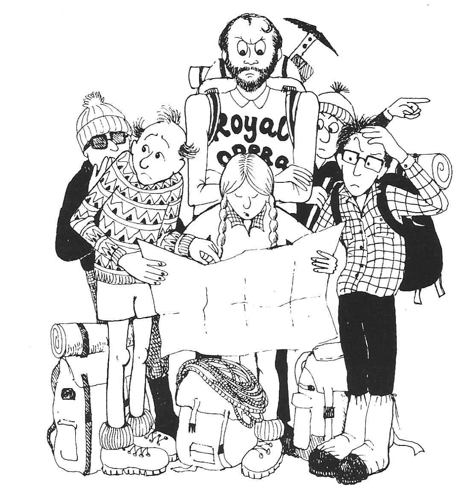
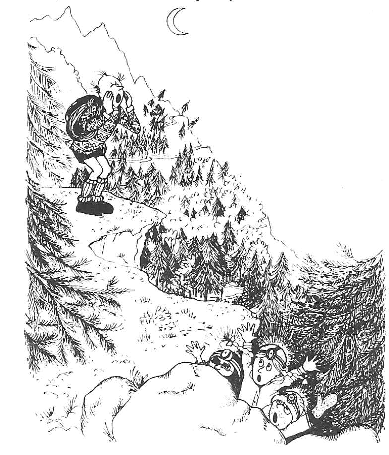

La Grande Epique de la Petite Dent de Veisivi
by John Barnard
A cautionary tale of the Western Pennine Alps, to be read aloud in an accent appropriate to that well-known Russian Yorkshireman pretender to the throne , now resident high above the Arolla valley, Aiguille de t’Csar.
“The Dent de Veisivi’s an excellent climb”
Read JB from out of his book
“If we do it tomorrow there’ll be plenty of time
To get back to the campsite and cook.”
At quarter past nine we started our way,
By nine seventeen we were lost
The path on the map was as clear as the day,
But not on the ground to our cost .
We swarmed up a gully that were filled up with boulders
To get to the path at the top
The sacks on our backs were hurting our shoulders,
So we thought it were time for a stop.
We had our first lunch-break at quarter to ten,
The second at ten forty-four.
We were nearing the col by two, but by then
We had needed to have several more.
We had planned the classic Veisivi traverse,
But JB felt a need for his bed
And the weather was making a change for the worse,
So we took the direct route instead.
JB having gone, there were five of us left,
So we put on our boots and the rope.
The rucksacks were stowed in a deep rocky cleft
And we carried on climbing the slope.
Dave rounded a corner to find a wide path:
There were goats and a firework and all.
“Oh heck, I’m embarrassed”, he said with a laugh,
“We don’t need the ropes here at all!”
But Dave was quite wrong - as we later found out -
For he scampered the ridge with much glee.
Then he looked up in terror as he heard Maxi shout
“’Ere, this side’s as loose as can be!”
Dave soloed on up to check out the top
And were about to turn back when he saw
A bright shiny peg there gleaming in t’rock,
And he thought, “I’ll have that for sure”.
And once on the top Dave discovered
The route we’d been missing all day.
“Our fortunes can now be recovered,”
He said, “by going back down the right way.”
Like sheep the rest of us followed,
But the last of us had to beware:
“I’ll clean up this crag”, Maxi hollered,
As he threw half the face to Haudères
Person by person we reached the summit,
Each shivering down to the bone.
The guidebook descent was a plummet,
So we chose a new route of our own.
It were Max that found the creaky old post,
Which he said, in his judgement, were sound.
And by total agreement well, total almost
It were Dave that checked out the ground.
Max tied the ropes and made ready
For Dave’s abseil down into space.
It were spaghetti that made him unsteady,
And in consequence, slowed down his pace.
He wanted to get to a ledge far below,
But for this did not hold much hope.
As his retro-rockets were starting to blow
He made it, with one inch of rope.
The rest of us followed at varying pace,
Though two gave cause for a frown:
For Nige gave a swing with his boots in Dave’s face
And Max was discarding his down.
The rest of the route was quite easy,
But for a loose rock and a goat.
The former made Max feel right queasy,
The latter brought threats from Dave’s throat.
We were safe, so we thought, at the end of the day,
Little knowing what was to come yet.
Dave and Max the two fastest were sent on their way,
As the sun was beginning to set.
Their mission was simple: to let JB know
The party was safe and complete
By the light of a head-torch they were spotted below
By JB who was waiting to eat .
The rest of the party that’s John, Nige and Chris
Were past the half-way point, but then
While deep in the woods the path they did miss
And the epic began once again.
They stumbled and fumbled and tumbled their way
Down boulder-strewn slopes in the dark
Through wild undergrowth, which in dense thickets lay,
Indelibly leaving their mark.
They were going great guns when encountered a hitch:
In their way was a wild waterfall.
“It’s going to be tricky to get down this pitch -
Let’s go to the left, by the wall.”
They slid down wet rock with a stick for a brake
And slithered o’er chalky-white grit.
Nige went on ahead, a recce to take
Saying, “You two wait here for a bit.”
He said it were good, but a pine tree caught John,
And got him caught up in its roots,
And when he got free, t’was a rhododendron
That next took a shine to his boots.
The next obstacle of which they fought shy
Was a rock wall of handholds quite bare,
When all of a sudden a voice from on high
Said, “What are you doing down there?”
T’was Maxi-the-million who came to their aid,
Having left John and Dave in a bar.
He’d expected the trio the bridge would have made
By the time he returned with the car.
He’d noticed, however, the lights in the wood
Had not moved very far since he left,
So he started on upwards as fast as he could,
His three friends to pluck from the cleft.
He ran up and down, up the zig and the zag,
“Where are you? Where are you?” he cried.
The trio were hidden behind their rock crag,
“We are here, over here!” they replied.
So nearly united were Max and the three,
Only needing their two paths to meet:
They skirted the rock-face to find themselves free
And with grateful rejoicing did greet.
When the foursome returned, at last, to the road,
On the car was a bottle of beer
And a note saying “We are preparing a load
Of food at the camp - see you there.”
For JB and Dave, having found that the bar
Offered nothing whatever to eat,
Had returned to the campsite and cooked up pasta
And something resembling dog meat.
Now, you may think this epic was ended,
But once again you would be wrong,
For Max in the front seat descended
To find he was no longer strong.
His strength had been sapped by the rescue
And before we were able to go,
He needed to wait for a great spew
Which took half an hour or so .
Smooth and fast, Chris drove through the night
For Max had requested, “Be quick!”
But before they could get to the campsite
He was once again terribly sick.
They stopped by the Hotel de Tsa
Where Nige had now met up with Dave :
Poor Maxi crawled out of the car
Looking fit to drop into his grave.
Dave got down on his hands and his knees
To where Max was lying quite bent.
He said, “Will you come with me please -
I’ll help you get back to your tent.”
With Max sound asleep in his bed,
The rest of us ate the dog meat,
Feeling restful and very well fed
And happy we’d finished the feat.
It were then that a bright flash were seen
And a loud bang from the cooker resounded:
In the grill-pan a lighter had been.
Is this epic for ever unbounded?
At two in the morning we lay down to sleep,
Our bodies all weary and battered.
The moral was simple: when climbing a heap
To take the right path was what mattered.
De duddly duddly duddly da,
De duddly duddly dee,
De diddly diddly diddly da,
This last verse were writ by JB.
There’s a secondary moral to learn from this tale,
Which at times has seemed quite a tangle,
For odes by committee can turn you quite pale,
Putting ears, tongue and brain through a mangle.
So don’t write a poem to add to folklore
Unless you have nothing to do,
For each verse will take you ten minutes or more,
And this one is verse forty-two.
Arolla, 4-8 August 1987

Figure 1: La Grande Epique

Figure 2: La Grande Epique

Figure 3: La Grande Epique

Figure 4: La Grande Epique

Figure 5: La Grande Epique